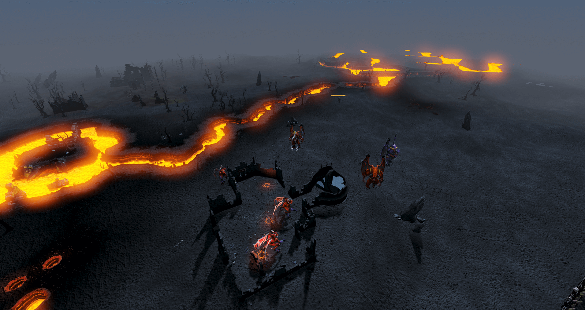
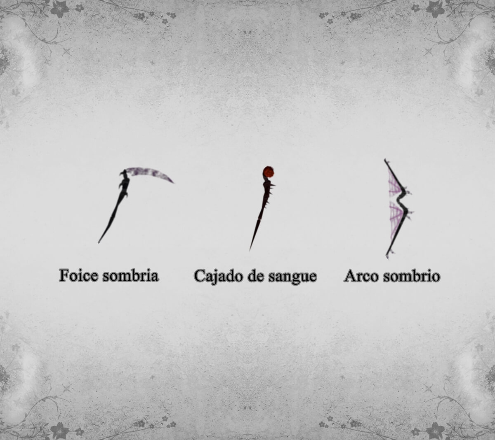

Atualizado em 25 Mar 2022 - 19:19
Ellie
Ellie é um demônios evocado e controlado pelo Mahjarrat Lucien. Ele usa Daemonicas Abhoris para evocar demônios no Antigo Templo e colocá-los em um estado de agonia física perpétua, curando seus corpos enquanto eles queimam e tornando-os extremamente hostis e agressivos. Ellie possue vários poderes formidáveis, os aventureiros podem usar água benta para enfraquecê-los.
Onde enfrentá-lo: Antigo Templo Elemental.

Possíveis recompensas:
